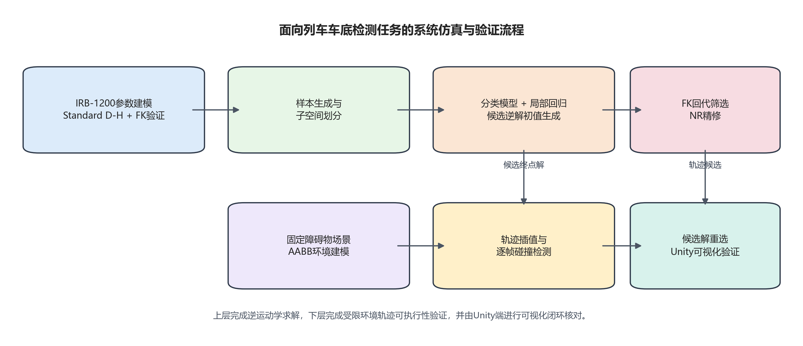
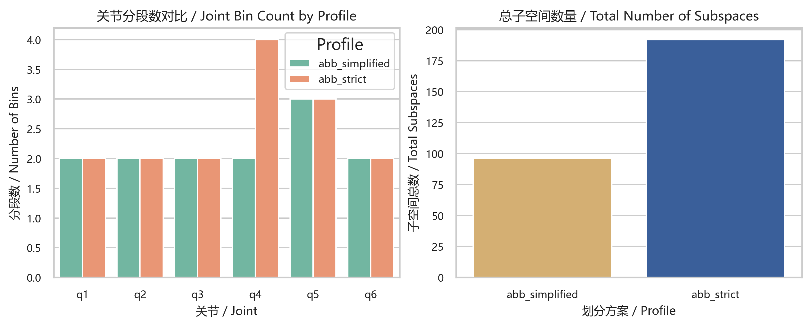
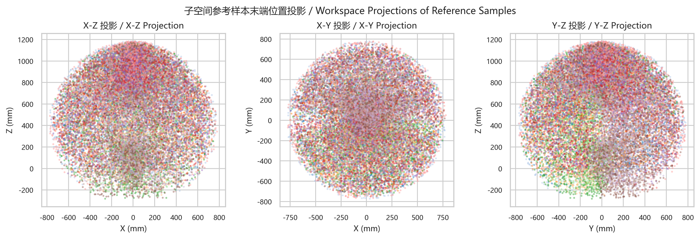
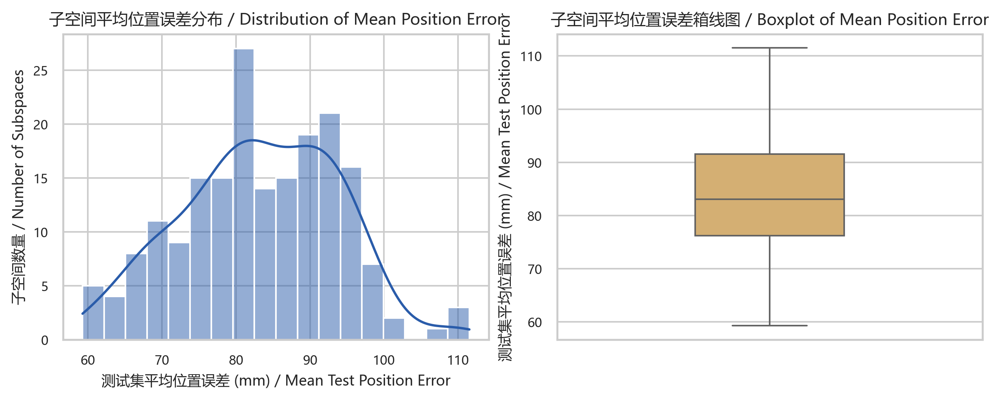
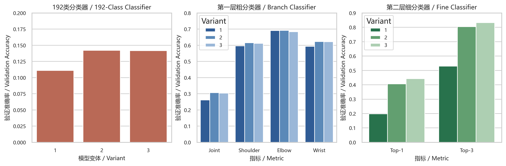
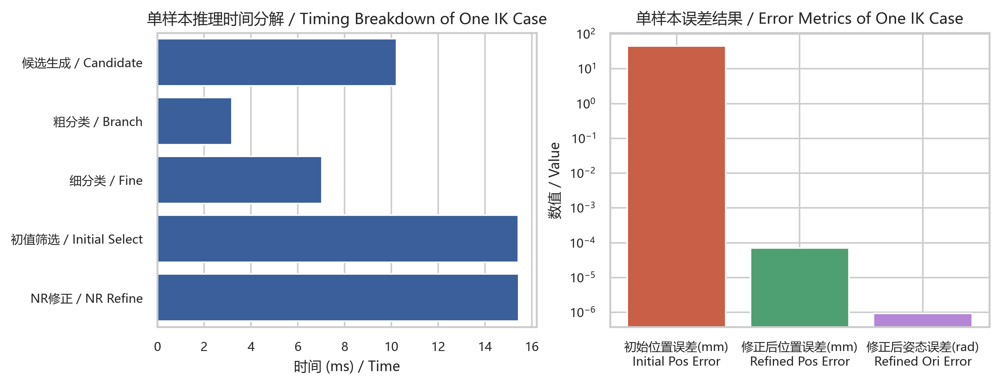
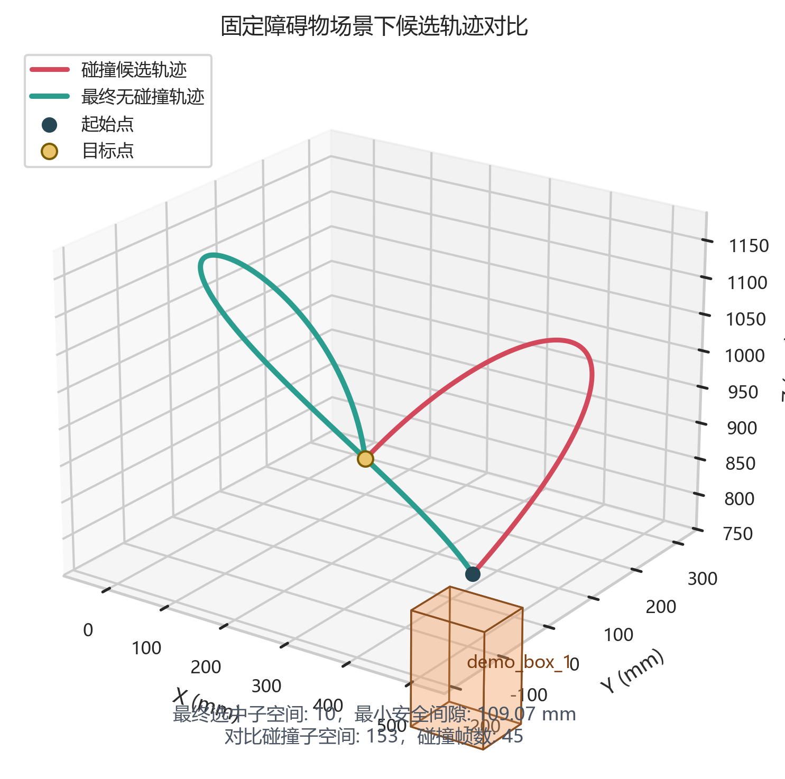
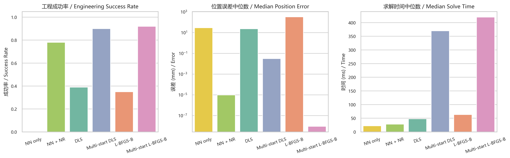
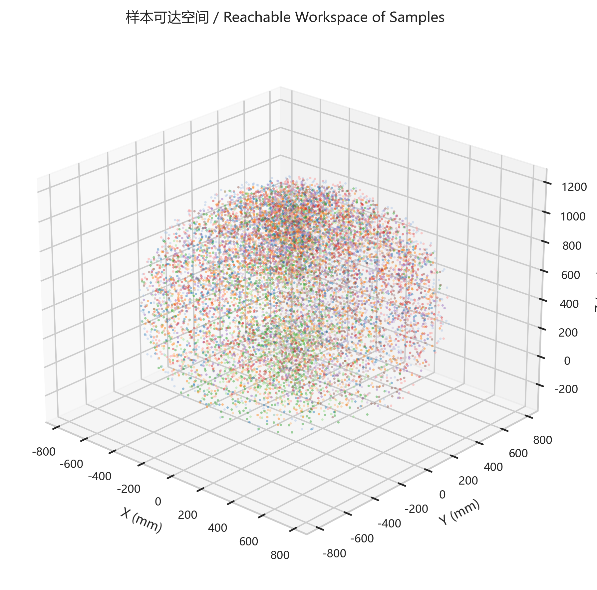

贡献一：可解释的解空间分段建模
通过对六轴关节空间进行结构化分段，将高维逆解问题转化为若干局部回归子任务， 在保证机械意义明确的同时，为分类器候选压缩与回归器训练提供了统一标签基础。
本页面面向毕业设计论文写作与项目答辩展示，对当前工程的研究目标、数学建模、 数据与标签体系、局部回归网络、分层分类器、候选生成策略、阻尼 Newton-Raphson 校正、 benchmark、Unity 联调、GUI 封装以及固定障碍物场景下的轨迹重选流程进行系统梳理。 页面内容直接整理自仓库内的 README、Summary、源码实现与正式结果工件，而非脱离工程状态的概念性摘要。
本项目围绕 ABB 工业机械臂的逆运动学求解问题展开。与仅使用传统数值法的方案不同， 当前工程采用“子空间划分 + 局部神经网络回归 + 分层分类候选生成 + 数值精修”的组合式链路， 目标是在保证物理一致性与最终精度的前提下，提高候选初始化质量、压缩搜索范围并增强工程展示能力。
通过对六轴关节空间进行结构化分段，将高维逆解问题转化为若干局部回归子任务， 在保证机械意义明确的同时，为分类器候选压缩与回归器训练提供了统一标签基础。
使用粗分类判定大构型，细分类压缩到少量候选子空间，再由子空间回归器输出初值， 最终借助阻尼 Newton-Raphson 达到高精度逆解，使神经网络与数值法形成互补。
当前仓库不仅包含训练与推理，还覆盖 benchmark、论文图表、图形界面、Unity 轨迹回放、 固定障碍物碰撞检测与候选解重选，具备较完整的研究型工程形态。
按当前工程推荐的正式路径，项目主线可概括为“建模 - 分段 - 训练 - 候选生成 - 精修 - 评估 - 可视化”。 其中，推理阶段的核心不是单一网络直接输出最终逆解，而是通过若干相互耦合的模块逐步收缩解空间并提高精度。
根据 robot_config.py 的 DH 参数、关节限位与偏置，建立 FK、pose6 与数值雅可比。
按关节区间将全局解空间划分为 96/192 个子空间，形成局部回归与分类标签系统。
训练子空间回归器、单层分类器、粗分类三头网络与条件细分类网络，保存正式元数据与模型工件。
以目标位姿为输入，先生成粗分支与细分类候选，再由对应子空间回归器产生逆解初值。
依据回代误差筛选较优初值，并通过阻尼 Newton-Raphson 进行局部修正以获得高精度逆解。
统计位置误差、姿态误差、耗时、候选质量以及 benchmark 结果，形成图表与结果摘要。
在固定障碍物场景下，对候选终解生成轨迹并做碰撞检测，通过代价函数重选无碰撞轨迹。
输出 GUI 结果与 Unity 可播放 JSON，实现研究流程的交互封装和可视化验证。
图 1. 工程主流程由分类候选压缩、局部回归初始化与数值法精修组成，避障与可视化模块在主求解链路基础上继续扩展。

当前研究对象为 ABB IRB 1200-7/0.7 六自由度工业机械臂。
末端位姿采用 pose6 = [x, y, z, \phi, \theta, \psi] 表达，
其中位置单位为 mm，姿态单位为 rad。该表示同时作为训练样本特征、
分类器输入与回归器输入的统一形式。
fk_model.py 负责实现正运动学、关节点坐标计算、欧拉角变换与数值雅可比。
在推理阶段，FK 除了用于回代误差统计外，也是阻尼 Newton-Raphson 计算误差向量与雅可比矩阵的直接基础。
当前工程将第 2 关节偏置设置为 theta2_offset = -90°，
该偏置并不改变机械限位本身，而是用于使数学坐标系与 ABB 机械臂建模约定保持一致。
| 参数项 | 当前取值 |
|---|---|
| 机器人型号 | IRB 1200-7/0.7 |
| 输入特征 | x_mm, y_mm, z_mm, phi_rad, theta_rad, psi_rad |
| 第 2 关节偏置 | -90° |
| 输出目标 | q1_deg ~ q6_deg |
子空间划分是本项目的核心结构之一。通过将六个关节分别划分为若干区间，可把全局逆解问题拆分为多个局部回归子问题，
同时为分类器提供明确的离散标签空间。当前工程保留 abb_simplified 与 abb_strict 两种方案，
正式实验统一采用 abb_strict。
| 配置 | q1 | q2 | q3 | q4 | q5 | q6 | 总子空间数 |
|---|---|---|---|---|---|---|---|
abb_simplified |
2 | 2 | 2 | 2 | 3 | 2 | 96 |
abb_strict |
2 | 2 | 2 | 4 | 3 | 2 | 192 |
| 关节 | 分段区间（deg） | 分段数 |
|---|---|---|
| q1 | [-170, 0], [0, 170] | 2 |
| q2 | [-100, 20], [20, 135] | 2 |
| q3 | [-200, -65], [-65, 70] | 2 |
| q4 | [-270, -135], [-135, 0], [0, 135], [135, 270] | 4 |
| q5 | [-130, -45], [-45, 45], [45, 130] | 3 |
| q6 | [-180, 0], [0, 180] | 2 |


在 abb_strict 配置下，当前工程使用两层分类：
第一层采用 coarse12，由 shoulder、elbow、
wrist 三个头共同构成 12 个粗分支；
第二层在给定粗分支条件下，对 q2_bin、q4_bin、q6_bin
组成的 16 个细类进行判定，并最终映射回全局 subspace_id。
这一部分不再强调公式推导，而是强调网络结构本身如何服务于整个逆解流程。 当前系统由三类关键网络组成：局部回归器、粗分类三头网络、条件细分类网络。 它们分别对应“初值生成”“大构型压缩”和“局部候选收缩”三个不同职责。
对每个候选子空间，系统调用对应的局部回归器生成逆解初值。
正式实现中这一模块拆成两支：一支预测 q1~q5，另一支预测 q6。
pose6，隐藏层宽度为 20，深度为 3，
通过两个局部分支输出完整的 6 维关节初值。
该模块的目标不是直接给出最终 subspace_id，而是先判断机械臂的大构型。
它使用共享主干后接三个分类头，分别预测 shoulder、elbow 与 wrist。
2 × 2 × 3 = 12 个粗分支候选。
在粗分支已知的前提下，系统将 pose6 与 branch_onehot_12 拼接，
构造条件输入，并进一步压缩到局部细类别，最终映射回全局 subspace_id。
| 变体 | 宽度 | 深度 | 残差连接 | BatchNorm | 适用模块 |
|---|---|---|---|---|---|
v1 |
35 | 6 | 否 | 否 | 单层分类器 / 细分类器 / 粗分类器 |
v2 |
35 | 20 | 是 | 否 | 单层分类器 / 细分类器 / 粗分类器 |
v3 |
35 | 30 | 是 | 是 | 单层分类器 / 细分类器 / 粗分类器 |
ClassifierMLP 与 MultiHeadBranchClassifier 都采用“输入投影 + 隐藏块 + 输出头”的组织方式；
上述结构图刻意强调模块职责与数据流向，以便论文展示时快速讲清系统结构。
正式在线推理入口为 predict_ik.py，障碍物场景下的扩展规划入口为
scripts/plan_collision_free_ik.py。与“网络直接出最终解”的方式不同，
当前系统强调候选集合生成、物理回代验证与数值精修的层层收缩，因此本节重点展示结构流程而非公式。
输入统一为 pose6，即末端位置与姿态组合特征。
由三头网络分别给出 shoulder、elbow、wrist 的高置信组合，形成粗分支集合。
结合粗分支 one-hot 条件，细分类器把搜索范围进一步收缩到少量候选子空间。
对每个候选子空间调用局部回归器，生成关节角初值 q0。
根据末端位置误差、上界指标 e_max 与候选排序结果筛出较优初值。
对较优初值执行阻尼 Newton-Raphson，获得高精度终解。
若存在障碍物场景，则以起点和终点构造直连或 waypoint 候选轨迹。
依据碰撞帧数、最小净空、路径长度与精度阈值，对候选轨迹进行重选。
图 11. 当前推理链路的核心不是单点预测，而是“分类压缩 - 回归初始化 - 数值精修 - 轨迹级筛选”的逐级收缩过程。
subspace = 10 的无碰撞轨迹，
最小净空约为 109.069 mm，说明流程已经具备轨迹级可行性判断能力。
在障碍物场景中，候选终解不再只按末端误差排序，而是进一步生成轨迹并进行逐帧碰撞检测。 当前规划器对每个候选轨迹统计是否碰撞、碰撞帧数、最小净空、轨迹总关节长度、单帧最大关节变化量等量， 再通过代价函数选择无碰撞且满足精度阈值的轨迹。
| 代价项 | 物理含义 |
|---|---|
I_col |
轨迹是否发生碰撞 |
N_col |
碰撞帧数 |
d_min |
最小净空，若为负则表示侵入障碍物 |
E_acc |
位置误差与姿态误差超阈值罚项 |
L_q |
轨迹总关节路径长度 |
Δq_max |
单帧最大关节变化量 |
d_clr |
净空奖励项，上限截断 |
本节汇总当前仓库中正式结果工件与 README 已确认的关键数值，重点展示回归系统、分类系统、 单样本推理效果以及固定障碍物场景下的轨迹重选结果。




除核心逆运动学方法外，当前工程已经形成从实验评估到交互展示的扩展链路，使项目不仅能输出数值结果， 也能支撑论文图表、界面封装和三维动画回放。
工程已完成 NN only、NN + NR、DLS、
Multi-start DLS、L-BFGS-B、
Multi-start L-BFGS-B 六组逆解方法对比，并生成对应图表与统计表格。
Python 侧能够导出 FK 参考结果、普通轨迹 JSON、方法对比轨迹 JSON 与障碍物演示 JSON；
Unity 侧则通过 AbbJointPosePlayer、AbbTrajectoryJsonPlayer 等脚本完成回放与校验。
gui/app.py 将训练后常用的推理、避障、JSON 导出、参考样本查看与图表流程集中封装，
使实验验证与论文展示操作更适合答辩或演示场景。


为避免页面沦为命令墙，本节只保留最能代表当前正式流程的关键入口命令。
完整命令与阶段性运行记录仍以 README.md 和 Summary.md 为准。